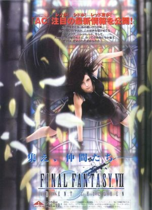
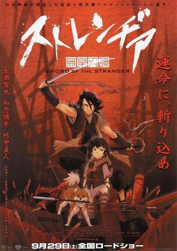
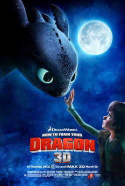

The 20-1 Animation Film Festival
Film Categories
Action
Final Fantasy VII: Advent Children
Final Fantasy VII: Advent Children (Japanese: ファイナルファンタジーVII アドベントチルドレン Hepburn: Fainaru Fantajī Sebun Adobento Chirudoren?) is a 2005 Japanese computer-animated science fantasy film directed by Tetsuya Nomura, written by Kazushige Nojima, and produced by Yoshinori Kitase and Shinji Hashimoto. Developed by Visual Works and Square Enix, Advent Children is part of the Compilation of Final Fantasy VII series of media, which is based in the world and continuity of the highly successful 1997 role-playing video game Final Fantasy VII. Final Fantasy VII: Advent Children was released on DVD and Universal Media Discs with Japanese voice acting in Japan on September 14, 2005, and on April 25, 2006, with English voice acting in North America and Europe.
Advent Children takes place two years after the events of Final Fantasy VII and focuses on the appearance of a trio that kidnaps children infected with an unknown disease. Former Final Fantasy VII hero Cloud Strife, suffering from the same disease, goes to rescue the children. He discovers that the trio plan to resurrect the villain Sephiroth using the remains of the extraterrestrial villain Jenova, and he and his compatriots from the game fight to stop them. The film's voice acting cast includes Takahiro Sakurai, Ayumi Ito, and Toshiyuki Morikawa in Japanese, and Steve Burton, Rachael Leigh Cook, and George Newbern in English.
The film has been released in multiple versions; Final Fantasy VII: Advent Children Complete, released on Blu-ray Disc in 2009, is the last version and adds 25 minutes of new and expanded scenes to the 100-minute original. The film has received mixed reviews. Critics have praised its animation and CGI work, but the plot has been criticized as both incomprehensible to viewers who did not play Final Fantasy VII and as a thin connection between action scenes. It received the "Maria Award" at the Sitges Film Festival in 2005 and the "Best Anime Feature" at the 2007 American Anime Awards. The original release was one of the best-selling animated movies in its release year in both Japan and the United States, and the Complete release was noted as driving a large increase in sales of the PlayStation 3 console in its release week. By May 2009, the DVD and Universal Media Disc releases had sold over 4.1 million copies worldwide.
Director: Tetsuya Nomura
Kung Fu Panda 3

Kung Fu Panda 3 is a 2016 3D American-Chinese[5] computer-animated action comedy martial arts film, produced by DreamWorks Animation and Oriental DreamWorks,[6] and distributed by 20th Century Fox. It was directed by Jennifer Yuh Nelson and Alessandro Carloni. The film was written by Jonathan Aibel and Glenn Berger, produced by Melissa Cobb, and executive produced by Guillermo del Toro. It is a sequel to the 2011 film Kung Fu Panda 2 and the third installment in the Kung Fu Panda franchise. The film features the voices of Jack Black, J. K. Simmons, Bryan Cranston, Dustin Hoffman, Angelina Jolie, Lucy Liu, Jackie Chan, Seth Rogen, David Cross, James Hong, and Kate Hudson. Also Jean-Claude Van Damme and Randall Duk Kim reprise their roles as Master Croc and Oogway from the previous two films.
The film received a limited release in China on January 23 for a special 3 hour sneak preview and was released day and date starting from January 28 in South Korea and Russia and on January 29 in the United States and Canada in 3D and in IMAX in certain countries with other markets scheduled to be released in March and April.
The film, like its predecessors, received generally positive reviews from critics and the general public. It had a bigger opening weekend in China than in the U.S. and Canada and in the latter market recorded the lowest opening among the franchise. As of February 7, 2016, it has grossed over $198 million worldwide.
Director: Jennifer Yuh Nelson & Alessandro Carloni
Sword of the Stranger
Sword of the Stranger (Japanese: ストレンヂア 無皇刃譚 Hepburn: Sutorenjia Mukōhadan?, Stranja Mukōhadan) is a 2007 Japanese anime film directed by Masahiro Andō and produced by animation studio Bones. The film follows Kotaro, a young boy who is hunted by a group of swordsmen from Ming Dynasty China for mysterious reasons. Among the group is a fearsome Western fighter named Luo-Lang, whose only desire is to find a worthy opponent. Kotaro and his dog meet "Nanashi", a nameless ronin who is haunted by memories of his past which have led him to avoid drawing his sword ever again. When the Ming clash with a Sengoku-era feudal lord, a proud general, and monks torn between faith and survival, the reason behind the Ming group's pursuit tests the bond between Kotaro and Nanashi.
Director: Masahiko Minami
how to train your dragon 2
How to Train Your Dragon is a 2010 American 3D computer-animated action-fantasy film produced by DreamWorks Animation and distributed by Paramount Pictures.1 Loosely based on the British book series of the same name by Cressida Cowell, the film was directed by Chris Sanders and Dean DeBlois, the duo who directed Disney's Lilo & Stitch. It stars the voices of Jay Baruchel, Gerard Butler, Craig Ferguson, America Ferrera, Jonah Hill, T.J. Miller, Kristen Wiig, and Christopher Mintz-Plasse.
The story takes place in a mythical Viking world where a young Viking teenager named Hiccup aspires to follow his tribe's tradition of becoming a dragon slayer. After finally capturing his first dragon, and with his chance at at last gaining the tribe's acceptance, he finds that he no longer wants to kill it and instead befriends it.
The film was released March 26, 2010 and was a critical and commercial success, earning acclaim from film critics and audiences and earning nearly $500 million worldwide. It was nominated for the Academy Award for Best Animated Feature and Best Original Score at the 83rd Academy Awards, but lost to Toy Story 3 and The Social Network, respectively. The movie also won ten Annie Awards, including Best Animated Feature.
A sequel, How to Train Your Dragon 2, was written and directed by Dean DeBlois and released on June 13, 2014 and was also universally acclaimed and a box office success. A second sequel, How to Train Your Dragon 3 is to be released on June 29, 2018. The film's success has also inspired other merchandise, including a video game and a TV series.
Director: Dean DeBlois